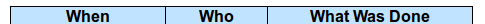

Presenter Flow in Zambia
Zambia is a piece of Conference Management Software. This document is a "How To" guide assisting in the way of entering and keeping track of Presenters for the Zambia FFF-branch instance for your conference. This is still a work in progress.
Abstract:
Zambia is a piece of Conference Management Software. This document is a "How To" guide assisting in the way of entering and keeping track of Presenters for the Zambia FFF-branch instance for your conference. This is still a work in progress.
Table of Contents
1 Introduction
There is a certain pattern to the flow of dealing with presenters,
whether they are sought after as Guest Of Honor, or as presenters on
specific subjects, or as individuals that people have suggested, and
how to get them successfully into Zambia. This section of the
documentation will be referencing some things only available to
SuperLiaison individuals, so if you do not have that designation,
this document might not be very useful to you in terms of work-flow,
but it is always good to have an understanding on how things go on.
Please do not let that deter you from enjoying this document.
2 Entering Presenters
There are two basic paths for entering Presenters into Zambia,
either they are entered via outside suggestion (by someone, possibly
the presenter themselves) when the call for presenters is open, or
by someone on the Liaison Team entering their information, because
negotiations by another channel of communications has happened. If
the presenter is already in the system, either said presenter or a
member of the Liaison Team can indicate their interest without
rentering their data. In this case, go directly to the next section.
2.1 Ouside Suggestions
Depending on your convention, many of the folks who are going to
present either applied to do so (once you put the call for
presenters) or are recommended by other folk. Either way they
will probably have been entered in the Brainstorm Suggest a
Presenter form.
Brainstorm Suggest Presenter
Fortunately or unfortunately, depending on the individual, you
might not even have enough information to track them down and
invite them but most people are good at putting in the
information. Once presenter information is entered, most of it
will be in the "NotesOnPresenter" element, looking much like:

Notes On Presenter
The element appears at the bottom of a presenter administration
screen.
Hopefully their name and email address will be in their profile
should you desire to contact them. Hopefully it will also include
the email address of the submitter, so if the information they
submitted doesn't actually connect you, or is incorrect, they will
be helpful in facilitating the contact.
2.2 By a Liaison person
Often a Liaison person is tapped to enter in a participant because
of negotiations done using other chanels. Entering in the
Presenter's information is slightly more comprehensive on the Enter
Participant page which can also be found by going to the "Manage
Participant & Schedule" tab, and then choosing the "Enter
Participants" link.

Add Participant
-
In the names section, the first name, name for publications and
badgename (the last two should be the same) are most
important. The last name, although not mandatory, is often useful
for disambiguation purposes. The "Populate Defaults" button is
mostly useless in our circumstances, being that it simply puts
the first and last name in the publication and badge name
fields.
-
The Will Participate and attend is very useful, but if you don't
know their state it is acceptable to leave that blank for now.
Unfortunately that will be problematic going forward beyond the
compensation elements, for they won't show up in the pull-down
menues until they are marked as "Yes".
-
It is important for the email address to be all in lower case.
-
Depending on the convention, the preferred way to be contacted
may be limited.
-
Make sure that the "Presenter" box is checked.
-
The requirement level of the postal addresses for presenters is
convention dependant.
-
The Biography elements are all the "raw" elements, i.e., what the
presenter themselves can see and edit. Depending on how your
convention is organized, this might also be the final bio or it
might have several different stages to go through before it is
finalized. The language in parentheses is only useful to note,
if your convention is multi-lingual. (e.g., en-us is english,
united states, fr-ca is french canadian)
-
Web is the bio shared on the web.
-
Book is what is being put in the convention book.
-
URIs should be in fully-formed link format.
-
Pictures can be locally or remotely sourced.
-
Location should go away soon, don't worry about that.
-
Web is the bio shared on the web.
-
The alternative ways of contact is always useful, if the
presenters are willing to offer up one or more. These can
include other email addresses, contact info for support people,
or other ways of being in touch with them.
-
The Log Note will also end up at the bottom of your page, with
the rest of the Notes On Presenter elements.
-
Additional Participant notes are notes that follow their profile
around.
-
Phone number is for contact, but depending on the strictures of
your convention this might or might not be required.
-
Registration Type currently is a fill-in field that should be
filled in with 'PresenterComp" but will become a pull-down list
at some point.
-
Don't forget to hit the "Save" button, please.
3 Updating Presenter Information
Once in the system, the most common request by presenters is to have
their password reset so that they can update the rest of their
profile. To do this, go to the Administer Participants link under
the Manage Participants & Schedule tab. Select the presenter from
the drop-down menu and, once selected you may change their password,
their interested and available setting, and their published name.

Administer Participants
Most of the other modification pages won't have the presenter in the
select menu until they are marked as a "Yes", as previously
explained. This is one of the pages that all the potential
presenters are available in the pull-down menu. If they are not
available here, they might still be in the system, just not marked
as someone you can see. If you think they should already be in the
system, and aren't showing up, please check with someone with
greater permissions, or other div-heads. They may already be in the
system, just under another division.
At the bottom of the Admin Participants page, there are several
different links. The next-most useful page is the first one: "Edit
PUBNAME further". When using the direct link, you will need to
reselect the participant from the top of the page.
StaffEditCreateParticipant.php
This link will take you back to the page you should be familiar
with, when you were creating the participant. You can add to or
change any of the extant information at this time. If you want to
see the importance of the fields, please see section on
StaffEditCreateParticipant.php for diagram and instructions.
4 Entering Compensation
There are two ways to reach the place to enter Compensation for a
Presenter. One way is to go to the bottom of the Admin Participants
page mentioned in the last section, then select the second link:
"Set Compensation for PUBNAME". When using the direct link, you
will need to reselect the participant from the top of the page.
Compensation Update
Only fill in the applicable compensation fields. Please don't
forget to hit "Update" before leaving the page. Compensation is
very conference dependant, please make sure any compensation entered
is in lines with your conference's policies.
You can also select the presenter name from the Presenter
Compensation table.
Compensation Information
This table will fill in with the information entered. The notes
display makes it a very big table, hence the option without notes is
the default.
5 Entering Schedule Elements offered
There are a few ways that Schedule Elements get entered into Zambia.
A Schedule Element is anything that might end up on the schedule.
This could be an Author Reading, a performance, a hosted meal, a
class, a panel, a keynote speech, or anything else that is schedule
worthy.
The information entered is visible to anyone who chooses to look at
the website. So people interested in what the decision process
might be, or are looking to see if what they proposed is already
under consideration, they can see much of the information. This
gives the community some sense of what is going on, so being
descriptive about the information entered is a good thing.
Once a Schedule Element is entered, if it is to be associated with a
particular individual or set of individuals, that is done in several
ways.
5.1 Outside suggestion
The Schedule Elements entered in from the outside, or by a
presenter themselves, will have certain fields filled in, but not
others. Hopefully the submitter has given sufficient information
in the form for you to determine if the Schedule Element is
worthwhile, appropriate, or fits within this particular event.
They might have also suggested a specific person for the Schedule
Element. The information asked for should be fairly
straight forward. This is found on the Brainstorm screen under the
Suggest a Session tab.
Brainstorm New Session
5.2 By a Liaison person
This form isn't overly complex, but there are some very important
pieces here. This can be found from the "Create a New Session"
link under the "Manage Sessions" tab.
Add New Session
-
The session number is just there for reference. If the next step
in your flow is to directly assign a person to a session, then
note down the number for future reference (the next section).
-
Division: Most probably going to be "Programming" but other
options are available.
-
Track: Finding the appropriate track is sometimes tricky if it
falls into multiple categories. You may want to set this to
some variant of "General", or "I don't know", depending on the
decision of your particular convention.
-
Type: What type of offering it is. Often "Panel" or "Class" but
might be something else.
-
Pub. Status (Publication Status): Describes if it is closed to a
certain set of people, or only interesting to them, but most
often will be "Public".
-
Title and Subtitle: Some conventions have limits on the length of
these, and how they are published.
-
Invited Guests Only: If this is going to be given by a
pre-scripted specific person, or set of people, this should be
checked, so other presenters cannot sign up to present for this
Schedule Element. If it is unchecked, when Presenters look for
the list of Schedule Elements they are able to sign up for, this
Schedule Element will be amongst them. This effects weather the
Prospective Participant Info below, is seen.
-
Sign up Req.? (Sign up Required): This is in place in case any
particular Schedule Element requires pre-con sign-up.
-
Est. Atten. (Estimated Attendance): This should be left blank,
since it is part of the feedback and history of the Schedule
Element after it is given.
-
Duration: This might be set by the convention, or might be
dependant on the Schedule Element, type of Schedule Element, or
many other things. There should be a default time set here by
your convention. This may or may not contain the break
between Schedule Elements, again depending on the decision of
your particular convention.
-
Room Set: Most room-sets will be standarized by your convention,
but sometimes a presenter has a particular preference that can
be accommodated. Most often "class room", "theater", or
"unspecified" will be your choice.
-
Status: If you are just entering the Schedule Element, and it has
not been previously negotiated as a Schedule Element that has
been confirmed, please set it as "Brainstorm". If it has been
accepted as definitely happening, "Vetted" is the level it should
be set to.
-
Web Description: This is the description of the Schedule Element
that will be on the website, once it is scheduled. It is shared
with the Brainstorm page until then. Because of this, please
enter an accurate description of the Schedule Element. There may
be length constraints (on both ends) for the description.
-
Program Book Description: This is the description of the Schedule
Element that will end up in the publications. It doesn't need to
be entered immediately (especially if the Schedule Element has
not yet become "Vetted"). There are probably has greater
restrictions on the length, due to the web costing less for space
than publications do.
-
Prospective Participant Info: This information gets shared with
all the Presenters, if the Schedule Element is not restricted by
the "Invited Guests Only" checkbox being checked. This
information is available in the area where Presenters may choose
to sign up for this Schedule Element. Things like "need at least
three years experience in the publishing field, from the
publisher's point of view" or the like would go in this field.
-
Notes for Participants: If you have yet to assign the Schedule
Element to someone in the system who has said "Yes", then their
name should be put in this field. When Schedule Elements are
actually vetted and scheduled, then this field should be any
particular notes that will be shared with the presenter or
presenters, in their schedule.
-
Notes for Tech and Hotel: This is any of the notes that will go
to logistics, beyond the Features and Services requests below.
Like "will need to shift around the table, with the assistant on
it, in the middle of the class".
-
Notes for Programming Committee: If this was a Schedule Element
submitted via the Brainstorm Submit a New Session (see above) then
any notes not specifically in the Schedule Element description
end up here. If you want to put commentary here, notes about the
Schedule Element, why it was requested, who saw it elsewhere, if
it fits into multiple tracks, or the like, this is the place to
make such notations.
-
Features and Services: These are pick-lists that you can choose
various features of the room, or services that should be provided
for the room, for the paricular Schedule Element. Everything
from a CD Player to a Flush Toilette should be covered here. If
it isn't covered here, add it to the "Notes for Tech and Hotel"
above. Should it be a regular enough addition, it will probably
be added to the select boxes here.
-
Publication Characteristics: Originally a hold-over from before,
but might now be used to indicate an expanded track conception of
the Schedule Elements, for multi-tracked elements.
-
Please, do not forget to save your work, or you will be unhappy.
5.3 By a Presenter
The presenter is taken to the outside suggestion section and asked
to fill out the form there. It will have their name associated
with it directly, as opposed to "Idea Suggestion" as the suggesting
individual. This will allow for the association between them and
the Schedule Element to be clean and fast.
5.4 Associating the Schedule Element with a Presenter
Most conventions only want to assign Presenters to Schedule
Elements, after said element has become vetted, but not all
convetions work that way.
If you want to assign a particular Schedule Element to an
individual or group of Presenters, make sure said individual or
group have already been set to "Yes" in terms of being willing to
present for your convention. The next step is to find the Schedule
Element in question.
One way is to look under the "Manage Sessions" tab at the View All
Sessions link. Find the Schedule Element, then select the link
provided by the number (not the title).
A second way is also under the "Manage Sessions" tab, using the
link "(Precis View With Links)". Find the Schedule Element, then
select the link provided by the number (not the title).
A third path to the Schedule Element in question is still under the
"Manage Sessions" tab. Enter the noted session id number in the
"Session ID:" box at the bottom of that screen and hit the "Search"
button. This should bring up just one record (the record that you
are expecting, hopefully), again simply select the link provided by
the number (not the title).
The fourth and fifth path presume that you have already marked the
class as "Vetted", otherwise it will not show up for either of
these.
A fourth path is still under the "Manage Sessions" tab, using the
"Edit an Existing Session" link. Not only will this allow you to
select your Schedule Element from the pull-down list of possible
Schedule Elements and edit the information that might have changed
since it was submitted, but also if you select the link provided by
the "Session #" number, you will be in the right place.
A fifth path is under the "Manage Participants & Schedule" tab,
using the "Assign participants to a session" link and choosing the
Schedule Element from the pull-down menu at the top of the page.
StaffAssignParticipants.php
Once you are on the "Assign Participants" page with the correct
Schedule Element, go to the bottom of the page where the "Assign
participant not indicated as interested or invited." pull-down menu
is located and select the presenter applicable then hit the "Add"
button. The presenter will now show up with their "Assigned" box
checked. If this particular Schedule Element has had other
presenters invited, or had other presenters expressed interest in
being part of this particular Schedule Element, that individual
will also show up here. They might have their Assigned box checked
or not, if that Schedule Element has been associated with that
individual.
6 Choosing Schedule Elements
Once all the potential Schedule Elements are in place, then comes
the delight of choosing which elements will be part of your
convention, when they will happen, and which will have to be
left for other conventions. This is mostly dependant on the path of
each convention, and is therefore outside the scope of this document
to dictate. There are several useful reports that might help with
this process, listed in the appendix.
7 Appendix
In point of fact, there turned out to be too many of them, for this
sampling to be useful. Please check the Conflict Reports and the
Prog Reports Indicies on the Available Reports page.